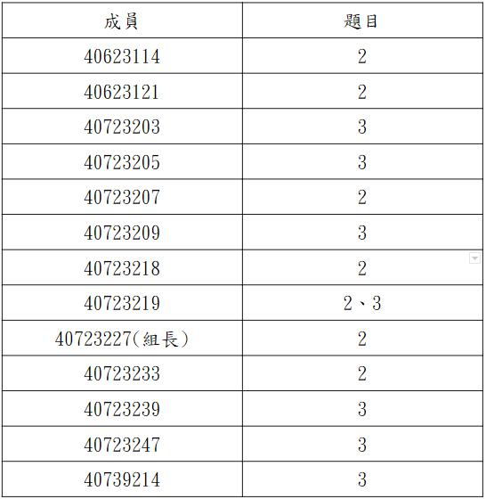

week6~9 <<
Previous Next >> week15~18
week10~14
Week10
第三組第三次會議
作業三 :
根據對 Topic2 和 Topic3 的閱讀，使用 CoppeliaSim、
Webots、Onshape 提出一個機電一體化項目。
工作分配表:

會議影片:
gm用戶登錄設置
操作影片:
Week11
Ubuntu設定及API連線
1.下載vitualbox、ubuntu、CoppeliaSim。
2.打開vitualbox並導入ubuntu。
3.更改虛擬主機的網路埠號。
4.設定完成後啟動ubuntu密碼為kmol2020，然後開啟lxterminal。
5.輸入xterm&再輸入ls 輸入cd coppeliasim4_rev4->ls->cd CoppeliaSim_Edu_v4_0_0_Ubuntu18_04->ls->./coppeliaSim.sh。
6.開啟後打開檔案sdc.ttt。
7.開啟下載好的CoppeliaSim四輪車控制器檔案。
操作影片
以ssh對Github連線
1.將portablegit將sh_for_solvespace檔案複製並修改成sh.exe。
2.開啟start_mdecourse.bat並輸入sh及ssh-keygen -t rsa -b 4096 -C "40723218"產生key
3.下載putty.7z SSH 連線工具組， puttygen.exe 將上述建立的 Openssh keys 轉為 putty 可以辨識的格式。
4.修改啟動的 start.bat 加入下列設定:set GIT_HOME=%Disk%:\portablegit\bin\
set GIT_SSH=%Disk%:\putty\plink.exe
5.將要使用 ssh 連線的倉儲 .git 中的 config 檔案中的 url 設定改為 ssh 連線格式:url = git@github.com:倉儲名稱/cd2020.git。
6.開啟 putty.exe 建立 session >github.com, 指定 Connection > Proxy 與 Connection > SSH > Auth。
7.將下列字串加入編輯器並存儲到y:\home\.ssh\config:
Host github.com
User git
Port 22
Hostname github.com
TCPKeepAlive yes
IdentitiesOnly yes
8.將建的OpenSSH的public key內容,送到Github帳號SSH settings中。
操作影片
第三組第四次會議
會議影片
Week12
IPv4 Ubuntu對外連線設定操作
1.點選檔案>喜好設定>網路>新增一個新的NAT網路。
2.編輯NAT網路>連接埠轉送>新增4個新的連接埠轉送埠號。
3.設定主機IP為127.0.0.1；客體IP為10.0.2.4；主機連接埠為22、19999、17443、18443；客體連接埠為22、19999、7443、8443。
4設定主機網路為NAT Network。
5.設定完後啟動，密碼是kmol2020。
6.開啟LXTermial，輸入ifconfig>輸入sudo apt install net-tools>密碼是kmol2020。
7.cd tmp>ls>輸入ping 127.0.0.1測試>cd cd2020pj1>git pull。
8.輸入sudo vi wsgi.py編輯內容，按i進行編輯。將近端的host改為10.0.2.4，接著按Esc並輸入:wq存儲。
9.開啟leo，並開啟cd2020pj1.leo，點選Nav搜尋allowExt。
10.點選fileuploadfrom，並將第10行新增一個ttt檔，完成後存儲並關閉leo。
11.cd..,接著在tmp下新增oauth_scrum.txt，輸入sudo vi oauth_scrum.txt。
12.按i編輯，內容先隨便輸入，接著按Esc並輸入:wq存儲。
13.cd cd2020pj1，並輸入python3 wsgi.py啟動。
14.網址為https:/127.0.0.1:18443/alogin。
15.帳號及密碼都為admin，進入後點選fileuploadform，點選要上傳的ttt檔。
16.點選download list檢查檔案是否上傳完成。
操作影片
第三組第五次會議
會議影片
week12抽點網站:http://mde.tw/cdbw12-3/content/index.html
week12抽點倉儲:https://github.com/mdecourse/cdbw12-3
Week13
IPv6 遠端控制設定
1.打開w13_ipv6_assignment.txt，內有ipv6遠端控制說明。
2.設定IPv6網路。
3.點選IPv6內容，IPv6位址輸入2001:288:6004:17:2020:2::7218
4.子網路首碼長度64、預設匝道輸入2001:288:6006:17::254。
5.開啟虛擬主機，設定整體系統埠號，將主機IP改為個人IP。
6.啟動Ubuntu輸入密碼kmol2020。
7.開啟LXTermial，並進入cd2020pj1。
8.git pull檢查有無新版本，cd docs/cmsimde。
9.輸入vi wsgi.py，將host改為個人主機IP(按i編輯，按Esc輸入:wq存儲)。
10.在另一台主機開啟putty，輸入預連線主機IP。
11.設定SSH下的X11設定完成後存儲，在打開即可連線該主機。
12.輸入帳密kmol2020，打開XLaunch.exe並輸入xterm&啟動。
13.進入tmp/cd2020pj1/docs/cmsimde，輸入python3 wsgi.py開啟遠端網址為[該主機IP]:17443
Week14
week14:抽點網站:http://mde.tw/cdbw14-2/content/index.html
week14:抽點倉儲:https://github.com/mdecourse/cdbw14-2
week6~9 <<
Previous Next >> week15~18